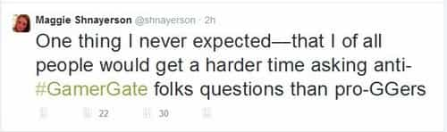

Derek Baroni is the world's leading expert in creating pretentious profile summaries


Ever since its inception, GamerGate has been violently opposed by SJWs, who are a funny bunch indeed. They claim tolerance but are actually the most intolerant group imaginable, turning on their own for the tiniest misstep. SJWs present themselves as the holy guardians of all that’s good and kind in the world, but actually promote harassment and humiliation of anyone who dares to speak up and question their sacred narrative.
Unlike GamerGate supporters, who haven’t actually done anything harmful, SJWs have done their worst and tried to destroy livelihoods of people who they perceive as the opposition by using their vast network of social connections. Here is a freelance journalist, Maggie Shnayerson, being mobbed by furious feminists because she asked a question to Randi Harper on Twitter about GamerGate:

Oh Maggie, why won’t you learn to check your journalistic privilege?
Of course, these negative actions have to be rationalized sooner or later as being done for “the greater good.” SJWs usually do it by proclaiming themselves as protectors of some fringe minority group’s sensitivities. Let’s see how Arthur Chu does it:
Stormtrooper indeed
Arthur Chu is quite an intelligent fellow, at least based on how he gamed the Jeopardy show for his own gain and ruined everyone else’s enjoyment in the process. Reading such statements from him is downright scary, but he surely must realize that the SJW movement is cannibalistic and cannot outlast the entropy.
This brings us to an interesting point. SJWs are not a monolithic group at all. Some SJWs, like Arthur, “ride the wave” while others are more moderate and genuinely believe that they can help bring about gender equality and social justice if they just keep “challenging the patriarchy” by any means necessary.
The innermost circle comprises of hardcore gender study professors that instill all these radical ideas into the malleable brains of their students, who go on to become bloggers or journalists. Thus a toxic philosophy can spread like a virus.
As described in this masterpiece
Note that in all cases, they wear the SJW label as a badge of honor, without any irony. But what is social justice anyway? Can it be attained? And at what cost? To answer these questions would probably require reading several arcane gender study tomes, but we can infer what SJWs mean by social justice from their behavior.
We live in a universe where every action has consequences, some that appear immediately and others only years or decades later. Hence, each person is born into life in circumstances that were created by other people. These circumstances may happen to be extremely brutal but that isn’t necessarily bad. Unless you’re a SJW, of course.
In a SJW mind, pain and distress always happen because a white hetero male wants them to happen. In reality, things tend to just happen and it’s nobody’s fault when it comes to major events or attitudes of the society. There is nobody going around and intentionally causing hurt feelings. Except utter psychopaths that are SJWs, that is.
What we possess is free will, intelligence, and creativity that helps us overcome any obstacle and deal with even the mightiest problems. SJWs ignore all of those inherent qualities and consider humans to be some sort of dead vessels, who have no agency and need to be either shielded from the outside world or shamed into submission.
The simple fact is that hardships create virtues and qualities that people admire. By trying to eliminate problems, SJWs actually ended up removing a lot of opportunities for maturity. Hence we see the generations of boys and girls growing up not sure who they are or what they are supposed to be doing with their lives. By shielding them from the world, we are creating a generation of lost children who will be unable to function independently or take charge when their time comes.
Naturally, you can’t expect SJWs to understand these subtleties. If you tried to be moderate, it simply will not work on them at all, as many neutrals have experienced with GamerGate. What works the best is satire. Loads and loads of relentless satire, such as the one done by @catfreq, a Twitter account parodying whatever is the latest smear on the SJW schedule:
That’s meowsogyny
SJW want the noble-sounding goal of striving towards “social justice” to give them recognition and respect. But, it doesn’t work that way. Screaming and shouting over Twitter and demanding that “somebody do something” does not earn you any gold badges. What counts are your constructive actions and setting a positive example by being a leader and a role model to those who need guidance and inspiration the most. Just take a look at Nick Vujičić:
Despite being born without any limbs, Nick endured and simply didn’t give up. If he can enjoy life, there is no reason why every trans, gay, handicapped or whatever person can’t do the same. But SJWs would probably respond that Nick simply demonstrates the depth of patriarchy that gives him the supernatural powers of loving life.
The unpleasant truth is that people start in circumstances laid out by their parents but eventually end up where they belong and deserve to be. The only way to get true social justice is if everyone works on it for himself. Nobody can fight your battles or speak on your behalf. Ambition, hard work and talent will always pay off and there is no amount of discrimination or oppression that can stop genuine passion from breaking through all kinds of ceilings.
Who knows, SJWs might at some point become enlightened enough to realize that only constructive actions matter and the words are just dust thrown into the wind. There is no other way to make this world a better place than to roll up your sleeves and get to work. But that would require actual effort, so probably not.
Did you like this post? Read more #gamergate news on Reaxxion, ROK’s little brother. Click here to visit.
{kind=link}
{kind=link}
{kind=link}
{kind=link}